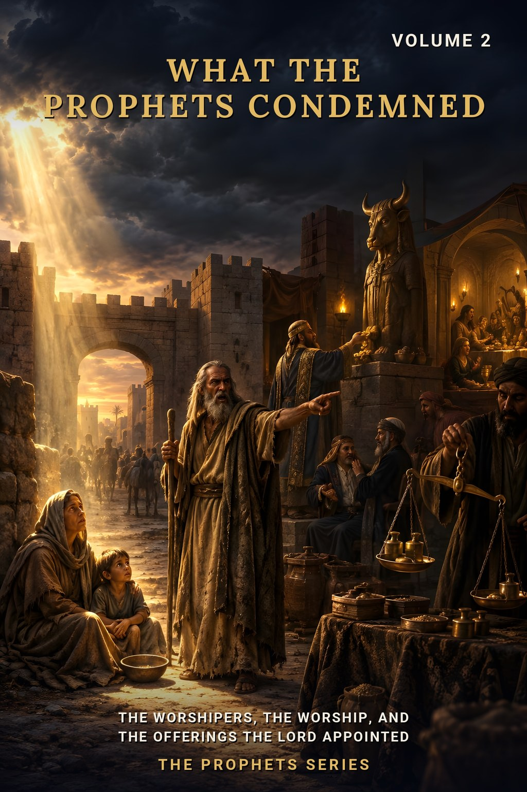
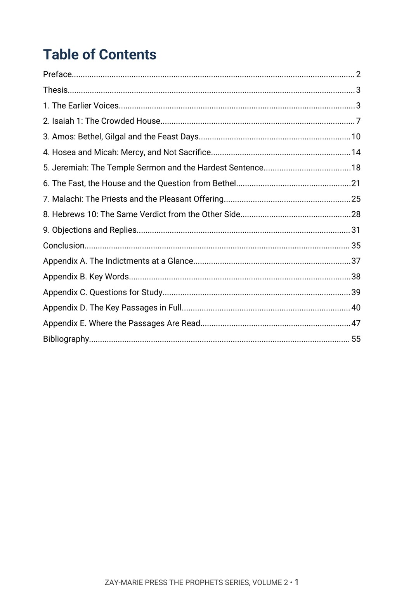
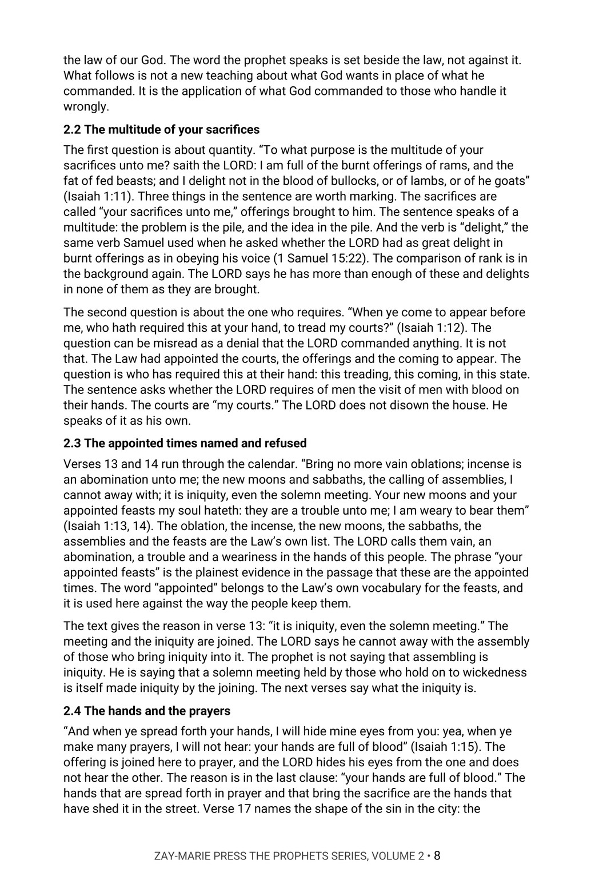
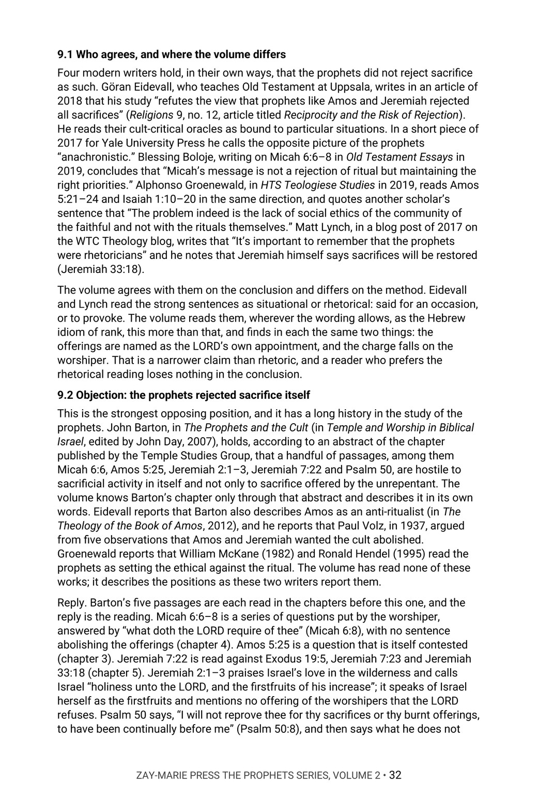

What the Prophets Condemned
The Worshipers, the Worship, and the Offerings the LORD Appointed
Isaiah says the LORD is full of the burnt offerings of rams. Hosea says he desired mercy and not sacrifice. What does each prophet condemn, in whose worship, and what does he leave standing?
Samuel tells Saul that to obey is better than sacrifice. Isaiah calls the feasts a weariness. Amos says he hates and despises them. Jeremiah says the LORD did not command burnt offerings and sacrifices when he brought Israel out of Egypt, and the same Jeremiah promises that the priests will offer them again. Malachi has the LORD say that someone might as well shut the doors as kindle fire on his altar for nought. Do these prophets want the offerings abolished?
It argues that each prophet condemns the worshipers and the way they worship, names the offerings as the LORD’s own appointment, sentences the house and people to judgment and not to abolition, and names the offerings again in his own hope. In Chapter 9 it sets its reading beside modern writers who see it differently.
New to the framework? The Digital Studies teach the distinctions this volume relies on. Start with the Digital Studies →
A Commentary That Argues a Position
This volume does not list the views held about the prophets and the offerings and leave the choice to the reader. It says what the author believes each prophet condemns, gives the evidence from the prophets’ own sentences, and answers the strongest objections by name.
It is the second volume of The Prophets Series, each volume of which is built around one narrower question the prophets raise themselves, not a walk through the prophetic books. Volume 1 asks how the prophets say a word of the LORD is known; this volume asks what they condemned in Israel’s worship. It is a different kind of book from the Digital Studies, which report what a passage says. Scripture is quoted from the King James Version throughout, checked word for word, and the writers named in Chapter 9 are quoted only from texts the author has read.
Related Reading
Digital Studies
Study 24 — The Willful Sin Warning Reads Hebrews 10:26 and the “no more sacrifice” of 10:18 in the letter’s own setting; this volume reads Hebrews 10:1–10 only as the same verdict the prophets give on the offerings.
Study 78 — The Sabbath and Its Meanings Reports the Sabbath passages as written, Isaiah 58:13 and 66:23 among them; this volume reads Isaiah 58 and 66 for the fast and the house and leaves the day to that study.
Study 59 — The Law’s Jurisdiction and the Body of Christ Reports where the Law’s jurisdiction stands; this volume asks what the prophets condemned and what they left standing in Israel’s worship, and draws no rule for the Body.
Bible Book Companion Series
Bible Book Companion — Isaiah Interprets the book of Isaiah through its key passages.
Bible Book Companion — Amos Interprets the book of Amos through its key passages.
Bible Book Companion — Jeremiah Interprets the book of Jeremiah through its key passages.
Commentary Series
Typology Commentary Series, Volume 1 — Tabernacle & Temple Typology Argues the pattern of the tabernacle and the Kingdom temple of Ezekiel 40–48; this volume reads the prophets’ charges against the worship in that house and leaves the pattern there.
Typology Commentary Series, Volume 3 — Priesthood Typology: Aaron, Melchizedek & Christ Argues the priesthood and its fulfilment; this volume reads Malachi’s charge against the priests and leaves the typology there.
Acts Commentary Series, Volume 1 — Acts 1–8: What the Twelve Were Told, and Did Argues Stephen’s use of Amos 5:25–27 and Isaiah 66:1–2 in Acts 7; this volume reads the same prophets in their own books.
From the Earlier Voices to the Objections
The Earlier Voices
Read Samuel’s word to Saul and the three psalms that set the offering beside the will done, and mark what each leaves standing.
Isaiah 1 and Amos
Trace the offerings, feasts and assemblies the LORD refuses, the hands they are brought by, and the places Amos names.
Mercy, and Not Sacrifice
Follow Hosea 6:6 and Micah 6:6–8 through their own contexts, and test what the words “not” and “more than” are doing.
The Temple Sermon
Read Jeremiah 6 and 7 in order: the house, the sermon at the gate, Shiloh, and the sentence in 7:22 set beside Exodus 19:5 and Jeremiah 7:23.
The Fast, the House and the Priests
Follow Isaiah 58 and 66, Zechariah 7 and Malachi 1 and 2, and see what each charges and what each promises restored.
Hebrews 10 and the Objections
Read the quotation of Psalm 40 in its letter, then hear named modern writers who read the prophets differently and weigh each reply.
Read the Word in Its Context
1 Samuel 15:22
“And Samuel said, Hath the LORD as great delight in burnt offerings and sacrifices, as in obeying the voice of the LORD? Behold, to obey is better than sacrifice, and to hearken than the fat of rams.”
Isaiah 1:11
“To what purpose is the multitude of your sacrifices unto me? saith the LORD: I am full of the burnt offerings of rams, and the fat of fed beasts; and I delight not in the blood of bullocks, or of lambs, or of he goats.”
Amos 5:21
“I hate, I despise your feast days, and I will not smell in your solemn assemblies.”
Hosea 6:6
“For I desired mercy, and not sacrifice; and the knowledge of God more than burnt offerings.”
Micah 6:8
“He hath shewed thee, O man, what is good; and what doth the LORD require of thee, but to do justly, and to love mercy, and to walk humbly with thy God?”
Jeremiah 7:22
“For I spake not unto your fathers, nor commanded them in the day that I brought them out of the land of Egypt, concerning burnt offerings or sacrifices:”
Malachi 1:10
“Who is there even among you that would shut the doors for nought? neither do ye kindle fire on mine altar for nought. I have no pleasure in you, saith the LORD of hosts, neither will I accept an offering at your hand.”
Hebrews 10:4
“For it is not possible that the blood of bulls and of goats should take away sins.”
What This Book Sets Out to Do
The prophets condemn the worshipers and the way they worship, and never the worship the LORD commanded. Each charge names the offerings as his appointment and falls on the one who brings them.
A sentence that sets one thing above another is not a sentence that abolishes the lower. A sentence of judgment on a house is not a sentence of abolition. The volume asks each prophet what he charges and what he leaves standing, and the reader will see where the sentences fall.
Preview the Volume Before You Purchase
Click any page to enlarge it for reading.


Table of Contents
See the full order of the argument, from the Preface to the Bibliography.



The Argument at Work
See the method: Isaiah 1 read in order, what the text says the LORD refuses, and what it leaves standing.


Objections and Replies
See the modern writers named on both sides, each position described as read, and the answer to it.
A Full Commentary on What the Prophets Condemned
57-Page Digital PDF
Cover and a fully numbered interior.
Nine Chapters
From the earlier voices to the objections and replies.
Objections and Replies
Modern writers named on both sides, each objection answered from the text.
Passage by Passage
Isaiah 1, Amos 5, Hosea 6, Micah 6, Jeremiah 6 and 7, Isaiah 58 and 66, Zechariah 7, Malachi 1 and 2 and Hebrews 10 read in order, with what each leaves unsaid.
Comparison Tables
Each prophet’s charge set beside what he leaves standing.
Conclusion
The position restated in full, with a closing table.
Five Appendices
The indictments at a glance, the key words in Roman letters, study questions, the key passages in full and a verse-by-verse index of where the passages are read.
Bibliography
Every work cited, listed by author and title.
What the Prophets Condemned
57-page digital PDF · For personal use